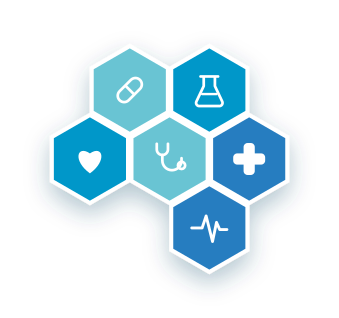

Professionalità
Medici specialisti esperti e costantemente aggiornati per offrire diagnosi accurate.
Un poliambulatorio specialistico nato per offrire cure di qualità, vicino alle persone del territorio.
Il Medical Center Moscato è un poliambulatorio specialistico situato a Quadrivio di Campagna, in provincia di Salerno. Nasce con l'obiettivo di riunire in un'unica struttura numerose specialità mediche, rendendo più semplice e accessibile l'accesso alle cure per tutto il territorio.
Grazie a un team di medici specialisti qualificati e ad ambienti moderni e accoglienti, accompagniamo i nostri pazienti in percorsi di prevenzione, diagnosi e cura attenti alla persona.

Tutto ciò che facciamo è guidato dall'attenzione alla persona e alla qualità delle cure.
Medici specialisti esperti e costantemente aggiornati per offrire diagnosi accurate.
Un punto di riferimento sul territorio, per ridurre spostamenti e tempi di attesa.
Ascolto, accoglienza e percorsi di cura pensati intorno alle esigenze del paziente.
Siamo a Via Calli 179, Quadrivio di Campagna (SA). Contattaci per qualsiasi informazione.
Contatti e indicazioni